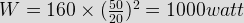

- Loss that occurs in magnetic core of a transformer is
Loss that occurs in magnetic core of transformer is IRON LOSS which is sum of the hysteresis loss and eddy current loss.
- In O.C test which side is kept open?
OC TEST (Open Circuit) is performed with hv side (high voltage) side kept open. Core losses are determined by open circuit test. In this test normal voltage is applied on the low voltage side at rated frequency & since there is no load on the high voltage side the reading of the wattmeter connected on the low voltage side gives the no load losses of the transformer. High voltage side is kept open due to suitability of using metering arrangement in the low voltage side rather than high voltage side.
- In S.C TEST l.v side is
In SC (SHORT CIRCUIT ) test, low voltage winding lv side is short circuited.
- ALL DAY ENERGY EFFICIENCY is related to which of the transformer?
distribution transformer is connected to the line for 24hrs / day . ALL DAY ENERGY EFFICIENCY = ratio of the energy output to that of energy input taken over 24hrs .
- How many groups are there in three phase transformer?
There are four groups:-
1. Group - 1 ( no phase displacement )(Yy0, Dd0, Dz0, Zd0)
2. Group - 2 ( 180 degree phase displacement )(Yy6, Dd6, Dz6, Zd6)
3. Group - 3 ( - 30 degree phase displacement )(Dy1, Yd1, Yz1, Zy1)
4. Group - 4 ( + 30 degree phase displacement )(Dy11, Yd11, Yz11, Zy11) - BELL transformer is a
when bell is connected directly across mains supply the making and breaking of the bell circuit produces radio interference. So, to avoid radio interference on same circuit bell is operated at low voltage through a bell transformer.
- Pre-commissioning tests are carried out on transformer for
Ratio tests, vector group test and also polarity tests are the precommissioning tests to be carried out in a transformer .
- The maximum efficiency of a 200 KVA transformer having an iron loss of 1800 watt & full load copper loss of 3200 watt occurs at-
Let it occurs at Kth fraction of full load then K = √(1800 ⁄ 3200) = 3 ⁄ 4 = 75%.
- A 100 KVA transformer has copper loss of 1000 W at full load & iron loss of 1000 watt. At half of the full load & 0.8 p.f.(lagging), efficiency of the transformer will be nearly
Copper loss at half load (0.5)2Pc = 0.25 Kw,
Output at half of the full load and 0.8 p.f. lagging is (0.5 X 100 X 0.8) = 48 Kw,
Input at half of the full load and 0.8 p.f. lagging is (40 + 1 + 0.25) = 41.25 Kw.
Then, efficiency η = Output / Input = (40 ⁄ 41.25) = 96.97 %. - An auto transformer having a transformation ratio of 0.8, supplies a load of 10 kw .The power transferred in inductively from the primary to the secondary is
The power transferred inductively from primary to the secondary =Total power *[1-N2⁄N1]=10*(1-0.8)=2 Kw.
- What is the unit of measuring dielectric strength of the transformer oil?
The unit of measuring dielectric strength of the transformer oil is Kilo-volt/mili meter
- What material is used to fill in the breather?
Moisture absorb silica gel or CaCl2 is used to fill in the breather which turns pink when it absorbs moisture.when fired again it get its original form by removing its moisture contents.
- What are the factors on which the hysteresis loss depends?
Ph = Khf.Bmax so, hysterissis loss depends upon frequency and flux density
- In a short circuit test if the wattmeter reads 160 watt at 20 ampere of current what will be the reading of the wattmeter at 50 ampere of current?

- The maximum efficiency of a transformer is 98% its iron losses are ___% of the input.
Total loss = (100 - 98)% = 2%.
At the maximum efficiency core loss = copper loss.
So, Wi = Wc =1%. - An auto transformer supplies a load of 5 Kwatt 120 V at unity p.f. If primary voltage is 240 V the power transferred inductively is ___ Kwatt.
Power transferred inductively = IP (1-K)
When K = V2/ V1 = 120/240 = 1/2
power transferred inductively = 5 X (1/2) = 2.5kW - A single phase transformer has a resistance of 2% and a impedance of 10% the maximum regulation of the transformer is ____%
Max. regulation is always equal to % Z of the transformer
- Sandwich winding is seen in
In shell type transformer both the windings, L.V and H.V are put around the central limb. The winding is called sandwich where flat rectangular/circular coils lie alternately, L.V. and H.V. are arranged one above the other with necessary insulation between them.
- Which windings are used for small capacity transformers?
Rectangular winding involves wastage of space and under short circuit condition, it gets deformed. Hence it is used for small capacity transformers.
Design with  by SARU TECH
by SARU TECH
www.sarutech.com
Content Credited to electrical4u.com
Online Electrical Engineering Study Site